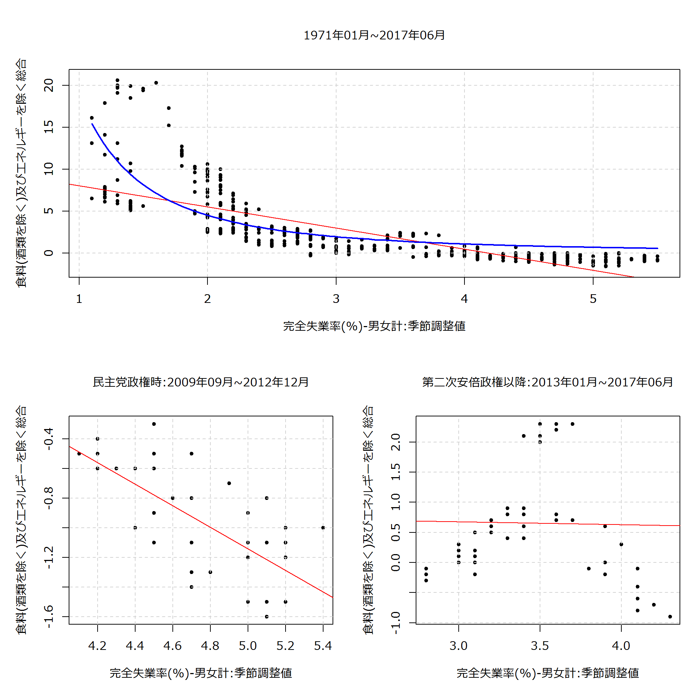
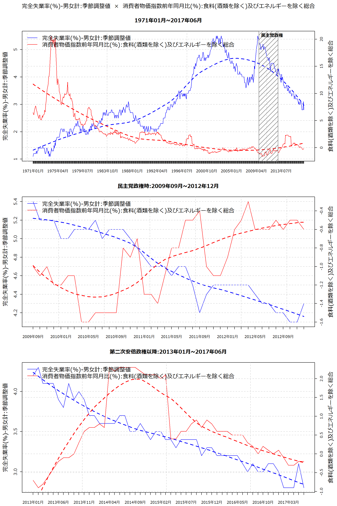

## 対象期間 : 1971年01月 ~ 2017年06月
## x : 完全失業率(%)-男女計:季節調整値
## y : 消費者物価指数前年同月比(%):食料(酒類を除く)及びエネルギーを除く総合
## Formula: y ~ a * x^b
##
## Parameters:
## Estimate Std. Error t value Pr(>|t|)
## a 18.77004 0.87646 21.42 <0.0000000000000002 ***
## b -2.05855 0.08395 -24.52 <0.0000000000000002 ***
## ---
## Signif. codes: 0 '***' 0.001 '**' 0.01 '*' 0.05 '.' 0.1 ' ' 1
##
## Residual standard error: 2.56 on 556 degrees of freedom
##
## Number of iterations to convergence: 11
## Achieved convergence tolerance: 0.000007516
## Group: 第二次安倍政権発足以降:2013年01月 ~ 2017年06月
## 完全失業率(%)-男女計:季節調整値
## Min. :2.80
## 1st Qu.:3.20
## Median :3.40
## Mean :3.45
## 3rd Qu.:3.70
## Max. :4.30
## 消費者物価指数前年同月比(%):食料(酒類を除く)及びエネルギーを除く総合
## Min. :-0.9000
## 1st Qu.: 0.0000
## Median : 0.5500
## Mean : 0.6574
## 3rd Qu.: 0.8750
## Max. : 2.3000
## ---------------------------------------------------------------------------
## Group: 民主党政権:2009年09月 ~ 2012年12月
## 完全失業率(%)-男女計:季節調整値
## Min. :4.100
## 1st Qu.:4.475
## Median :4.700
## Mean :4.715
## 3rd Qu.:5.100
## Max. :5.400
## 消費者物価指数前年同月比(%):食料(酒類を除く)及びエネルギーを除く総合
## Min. :-1.600
## 1st Qu.:-1.200
## Median :-0.950
## Mean :-0.935
## 3rd Qu.:-0.600
## Max. :-0.300| ID | 項目 | 2012年06月 | 2017年06月 | 2012年06月から2017年06月の変化(%またはポイント) |
|---|---|---|---|---|
| 1 | 完全失業率(%)-男女計:季節調整値 | 4.3 | 2.8 | -1.5 |
| 2 | 消費者物価指数前年同月比(%):食料(酒類を除く)及びエネルギーを除く総合 | -0.6 | -0.2 | 0.4 |